CRVI000108Masuteru Aoba - A.D. 3000 ⋯ Energy-Addicted Man?
エネルギーに頼り過ぎた3000年の人間？
エネルギーに頼り過ぎた3000年の人間？

CRVI000284David Olère - Pour l'Amour du Ciel! (For Heaven's Sake)
Press book illustration · Paramount, Paris
Press book illustration · Paramount, Paris

CRVI000109Katsumi Asaba - Bauhaus.
Misawa Design, bauhaus collection · after Lyonel Feininger's woodcut 'Cathedral', 1919 · 2009
Misawa Design, bauhaus collection · after Lyonel Feininger's woodcut 'Cathedral', 1919 · 2009

CRVI000285Unknown - Heinz Tomato Juice — We're Sorry There Aren't Enough of our kind to go 'round
Advertisement · Fortune magazine · 1935 · 1935
Advertisement · Fortune magazine · 1935 · 1935

CRVI002855April Greiman - AIGA Comm Graphics
1994
1994

CRVI002516Josef Müller-Brockmann - musica viva
1959
1959

CRVI002434Allison Reimold - The Invite Mini Poster

CRVI001442Joseph Maria Olbrich - Secession: Kunstausstellung der Vereinigung Bildender Künstler Oesterreichs
Poster · 1898
Poster · 1898

CRVI002853April Greiman and Jayme Odgers - Los Angeles 1984 Olympic Games
1984
1984

CRVI000181Shigeo Fukuda - Look 1
Exhibition · 103 x 73 cm offset · 1985
Exhibition · 103 x 73 cm offset · 1985

CRVI000122Shigeo Fukuda - [Poster: figure walking through a red spiral, LOOK series]
Title not established
Title not established
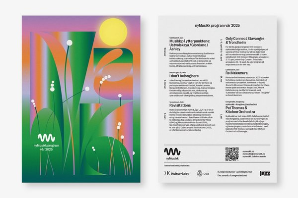
CRVI002436Non-Format - nyMusikk — Vår 2025
2025
2025

CRVI000105Masuteru Aoba - 10th Anniversary of "Tategumi Yokogumi" Magazine
Morisawa & Company Ltd. · Silkscreen · 1993
Morisawa & Company Ltd. · Silkscreen · 1993

CRVI000282Unknown - Caron's Face Powder
Poster
Poster

CRVI001054Takenobu Igarashi - Poster for the 15th Summer Jazz Festival
Poster · 1983
Poster · 1983

CRVI000581Alvin Lustig - Twenty-Third Commencement
Beverly Hills High School · 1940
Beverly Hills High School · 1940

CRVI002708Mitsuo Katsui - 生かす文字 (Letters and Life)

CRVI000158Kazumasa Nagai - Human Right - Living Together - Artis '89
Designed by Kazumasa Nagai · 1988
Designed by Kazumasa Nagai · 1988

CRVI000829Seymour Chwast - Freud
Union Camp Paper · 64 × 89 cm
Union Camp Paper · 64 × 89 cm

CRVI001351Barney Bubbles - Get Happy!! — promotional poster
Designed by Barney Bubbles · 1980
Designed by Barney Bubbles · 1980

CRVI001058Rick Valicenti - Show Boat — Lyric Opera of Chicago
Poster
Poster

CRVI002671Ikko Tanaka - The New Spirit of Japanese Design: Print
1984
1984
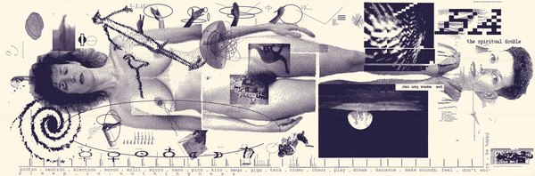
CRVI002854April Greiman - DOES IT MAKE SENSE? Design Quarterly #133
1986
1986

CRVI000288Utagawa Hiroshige - Eight Shadow Figures Art Print
Poster
Poster

CRVI000141Shin Matsunaga - Shiseido Sun Oil
Offset lithograph · 1971
Offset lithograph · 1971

CRVI000156Kazumasa Nagai - Design Forum - Matsuya Ginza
Designed by Kazumasa Nagai · 1981
Designed by Kazumasa Nagai · 1981

CRVI002513Josef Müller-Brockmann - Juni-Festwochen Zürich 1959
1959
1959

CRVI001611Alphonse Mucha - Lorenzaccio
Poster · 1896–1900
Poster · 1896–1900

CRVI000142Shin Matsunaga - [Poster: PLAY, black discs and an orange form]
Title not established
Title not established

CRVI000287Herbert Bayer - Bauhaus Exhibition Poster
Poster
Poster

CRVI000127Koichi Sato - Sakurahime Azuma Bunsho
桜姫東文章 · Shinjuku Kinokuniya Hall · 1976 Tomin Arts Festival · 1976
桜姫東文章 · Shinjuku Kinokuniya Hall · 1976 Tomin Arts Festival · 1976

CRVI000130Koichi Sato - New Music Media, New Magic Media
1974
1974

CRVI002673Ikko Tanaka - The New Spirit of Japanese Design: Print (second colour rendition)
1984
1984

CRVI000107Masuteru Aoba - The Bread Is For Peace
戦争に使うパンはない · anti-war poster · carries an Arthur Koestler passage in twelve languages · c1975
戦争に使うパンはない · anti-war poster · carries an Arthur Koestler passage in twelve languages · c1975

CRVI000121Tadanori Yokoo - Word & Image
The Museum of Modern Art, New York, January 24 – March 10 · 1968
The Museum of Modern Art, New York, January 24 – March 10 · 1968

CRVI000116Tadanori Yokoo - Made in Japan, Tadanori Yokoo, Having Reached a Climax at the Age of 29, I Was Dead
Self-portrait poster · 1965
Self-portrait poster · 1965

CRVI000137Shigeo Fukuda - [Poster: ring of figures on dark red]
Title not established
Title not established

CRVI000136Shigeo Fukuda - [Poster: figure walking off a curling sheet of paper]
Title not established
Title not established

CRVI000149Shigeo Fukuda - The Marriage of Figaro - Teatr Narodowy Warsaw
Designed by Shigeo Fukuda
Designed by Shigeo Fukuda

CRVI002800Siegfried Odermatt - Untitled (ampersand)

CRVI000184Designer unknown - Швейныя машины Компаніи Зингеръ — Singer Company Sewing Machines
Russian Singer emblem · advertising poster
Russian Singer emblem · advertising poster

CRVI000138Shigeo Fukuda - [Poster: red arches with figures]
Title not established
Title not established

CRVI000791Paul Rand - Direction Magazine exhibition poster
Offset lithograph, 1970 printing of the 1939 design · 91.4 × 61 cm · 1939
Offset lithograph, 1970 printing of the 1939 design · 91.4 × 61 cm · 1939

CRVI002668Ikko Tanaka - Untitled (face in concentric arcs)

CRVI000786Paul Rand - Sources and Resources of 20th Century Design
International Design Conference in Aspen · 1966
International Design Conference in Aspen · 1966

CRVI002711Shin Matsunaga - Rights of Humankind
1989
1989

CRVI002684Shigeo Fukuda - Happy Earthday
1982
1982

CRVI001039Kiyoshi Awazu - Untitled poster
AGI (Alliance Graphique Internationale) member archive
AGI (Alliance Graphique Internationale) member archive

CRVI002852April Greiman - Workspace
1987
1987

CRVI001048 - ANTI-WAR AND LIBERATION

CRVI000132Tadanori Yokoo - The 5th International Biennial Exhibition of Prints in Tokyo
The National Museum of Modern Art, Tokyo · 11.2–12.15 · 1966
The National Museum of Modern Art, Tokyo · 11.2–12.15 · 1966

CRVI001079Kim Laughton - Untitled

CRVI001043Kiyoshi Awazu - Contemporary Print Exhibition, 50 Earlham Street Gallery, London
Poster · 1981
Poster · 1981

CRVI001045Kiyoshi Awazu - Untitled poster

CRVI002419Gustav Klutsis - Let's Fulfill the Plan of Great Works
1930
1930

CRVI001047 - Japanese poster for Jean-Luc Godard's 'Week End'
Film poster
Film poster

CRVI002953Mitsuo Katsui - poster

CRVI002505Milton Glaser - Mahalia Jackson - Easter Sunday - Philharmonic Hall, Lincoln Center
1967
1967

CRVI001042Kiyoshi Awazu - Poster Nippon
Screenprint · LACMA, Marc Treib Collection · 1972
Screenprint · LACMA, Marc Treib Collection · 1972

CRVI001503Gustav Klutsis - Without Heavy Industry We Cannot Build Any Industry
Poster · 1930
Poster · 1930

CRVI002435Non-Format - nyMusikk — Høst 2025
2025
2025

CRVI002920Alexandre Wollner - alexandre wollner

CRVI002949Ikko Tanaka - Japan
1980
1980

CRVI000825Seymour Chwast - Canto XVIII, PPG #52
Push Pin Graphic #52 · 46 × 71 cm · 1967
Push Pin Graphic #52 · 46 × 71 cm · 1967

CRVI000139Jutaro Itoh - Hiroshima (orange)
廣島
廣島

CRVI000131Shigeo Fukuda - [Poster: paperclip with legs]
Title not established
Title not established

CRVI000135Shigeo Fukuda - UCC Coffee
Advertising
Advertising

CRVI000816Seymour Chwast - Blues Project
Offset lithograph · 102.2 × 75.2 cm · 1968
Offset lithograph · 102.2 × 75.2 cm · 1968

CRVI001598Théo van Rysselberghe - Poster for the Lembrée Gallery
Poster · 1897
Poster · 1897

CRVI001433Koloman Moser - XIII. Ausstellung der Vereinigung Bildender Künstler Österreichs Secession
Poster · 1902
Poster · 1902

CRVI001617Alphonse Mucha - Zodiaque (La Plume)
Poster · 1896–97
Poster · 1896–97

CRVI002422Gustav Klutsis - Oppressed peoples of the whole world, under the banner of the Comintern, overthrow imperialism
1924
1924

CRVI002510Josef Müller-Brockmann - Juni-Festwochen Zürich 1957
1957
1957

CRVI002507Milton Glaser - Temple University Music Festival
1975
1975

CRVI000111Kiyoshi Awazu - Contemporary Japanese Sculpture Exhibition — Form and Color
現代日本彫刻展 形と色 · 1973
現代日本彫刻展 形と色 · 1973

CRVI000714Robert Beatty - 3 Day Gallon
Ahem Editions print · 2026
Ahem Editions print · 2026

CRVI000814Seymour Chwast - June 12 March
Mixed media · 46 × 61 cm · 1982
Mixed media · 46 × 61 cm · 1982

CRVI000582Alvin Lustig - World Inventors Exposition
1947
1947

CRVI000744Jeffery Keedy - Cranbrook Graduate Studies in Fiber
Poster
Poster

CRVI001055Takenobu Igarashi - Alphabet
Published by the Takenobu Igarashi Archive
Published by the Takenobu Igarashi Archive

CRVI001698Filippo Tommaso Marinetti - Futurismo
Poster · 1932
Poster · 1932

CRVI000126Shigeo Fukuda - The World of Shigeo Fukuda in U.S.A.
M.H. de Young Memorial Museum, San Francisco · Junior Art Center, Los Angeles · Santa Barbara Museum of Art · 1971
M.H. de Young Memorial Museum, San Francisco · Junior Art Center, Los Angeles · Santa Barbara Museum of Art · 1971

CRVI000790Paul Rand - Golden Circle
IBM · Kauai Surf Hotel, Hawaii · 1981
IBM · Kauai Surf Hotel, Hawaii · 1981

CRVI000123Shigeo Fukuda - Jazz Festival Montreux
19e Festival de Jazz Montreux, 5–20 juillet 1985 · 100 x 70 cm · 1985
19e Festival de Jazz Montreux, 5–20 juillet 1985 · 100 x 70 cm · 1985

CRVI001352Barney Bubbles - Elvis Costello — portrait poster
Designed by Barney Bubbles
Designed by Barney Bubbles

CRVI001044Kiyoshi Awazu - mano-dharma concert — Takehisa Kosugi
Poster
Poster

CRVI000110Kiyoshi Awazu - The 6th Contemporary Japanese Sculpture Exhibition
第6回現代日本彫刻展 · Ube City Open-Air Sculpture Museum, Tokiwa Park, Ube, Yamaguchi · 1975
第6回現代日本彫刻展 · Ube City Open-Air Sculpture Museum, Tokiwa Park, Ube, Yamaguchi · 1975

CRVI001408Peter Max - Different Drummer
Peter Max · 1960s · poster
Peter Max · 1960s · poster

CRVI000117Tadanori Yokoo - Are You Ready for Foods?
Advertisement for a Chinese restaurant · 1989
Advertisement for a Chinese restaurant · 1989
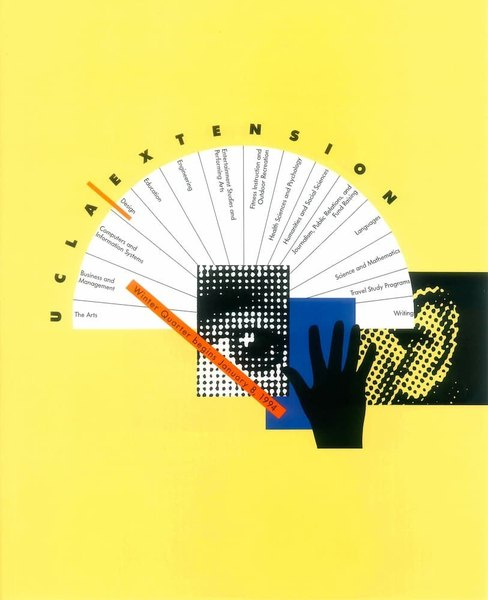
CRVI002806Rosmarie Tissi - UCLA Extension

CRVI001331Barney Bubbles - Don't Join!
Designed by Barney Bubbles
Designed by Barney Bubbles
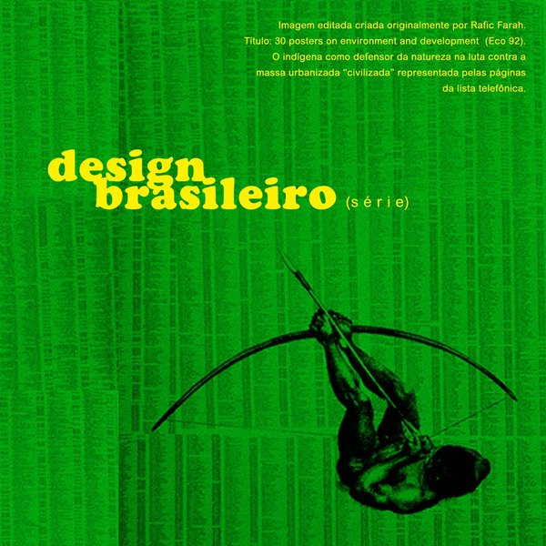
CRVI002921Rafic Farah - 30 Posters on Environment and Development (Eco 92)
1992
1992

CRVI000833James McMullan - Head Out to Oz
Push Pin Graphic #52 · 71 × 46 cm · 1967
Push Pin Graphic #52 · 71 × 46 cm · 1967

CRVI002694Kenji Aihara - 山形ビエンナーレ2022: 舞台芸術集団エンギア
2022
2022

CRVI002522Unattributed - Dynamic Perspective: Optically Intriguing

CRVI000828Seymour Chwast - Penny Pitch
68.6 × 53.3 cm · 1967
68.6 × 53.3 cm · 1967

CRVI001049Takenobu Igarashi - EXPO '85 — The International Exposition, Tsukuba, Japan
Poster · The Museum of Modern Art, New York · 1985
Poster · The Museum of Modern Art, New York · 1985

CRVI000129Koichi Sato - Soap Bubbles Floated, They Floated Into Outer Space
Produced by Human Design · Fuji Television
Produced by Human Design · Fuji Television

CRVI002707Mitsuo Katsui - 晴れる文字 (Letters and Sunlight)
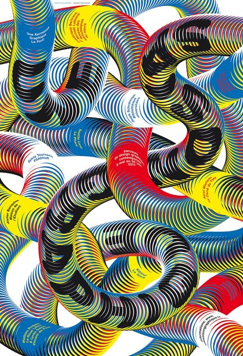
CRVI002936Ralph Schraivogel - poster

CRVI000133Tadanori Yokoo - JUN ROPÉ
Fashion advertising
Fashion advertising

CRVI002812Rosmarie Tissi - World City Expo Tokyo '96
1994
1994

CRVI001069David Rudnick - Poster for Making Time
Poster · Philadelphia
Poster · Philadelphia

CRVI000286Herbert Bayer - Bauhaus Exhibition Poster - 50 Years of Bauhaus
Poster
Poster

CRVI002952Mitsuo Katsui - NOH 能
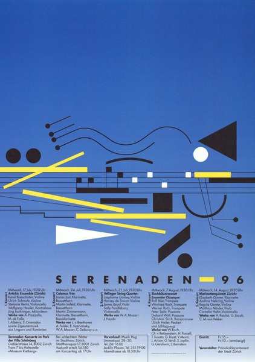
CRVI002802Rosmarie Tissi - Serenaden 96
1996
1996

CRVI000778Paul Rand - Boston: A New National Park
National Park Service · 1975
National Park Service · 1975
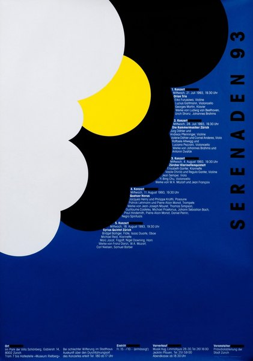
CRVI002807Rosmarie Tissi - Serenaden 93
1993
1993
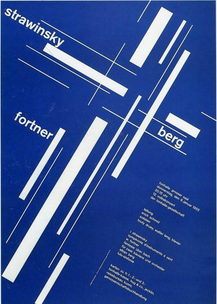
CRVI002523Josef Müller-Brockmann - Strawinsky / Fortner / Berg (blue printing)
1955
1955
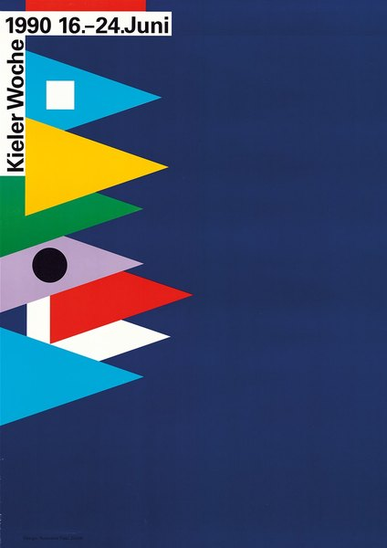
CRVI002809Unattributed - Kieler Woche 1990
1990
1990

CRVI000788Paul Rand - Skull and Olive Branch
Vietnam anti-war poster · 1969
Vietnam anti-war poster · 1969

CRVI000613Ivan Chermayeff, Thomas Geismar - Whitney Museum of American Art, 75th & Madison, Open Free Tuesday Evenings
Lithograph, 116.8 × 76.1 cm · 1977
Lithograph, 116.8 × 76.1 cm · 1977

CRVI002499Unattributed - LIFE. — Numazu Port Deep Sea Aquarium

CRVI000119Tadanori Yokoo - Koshimaki-Osen
腰巻お仙 · theatre poster for Kara Juro's Jokyo Gekijo (Situation Theatre) · silkscreen · 1966
腰巻お仙 · theatre poster for Kara Juro's Jokyo Gekijo (Situation Theatre) · silkscreen · 1966

CRVI002706Mitsuo Katsui - Untitled (spectrum rays)

CRVI000260Wiktor Górka - Cabaret
Poster · 2017 · 2017
Poster · 2017 · 2017

CRVI000124Ikko Tanaka - Nihon Buyo
UCLA Asian Performing Arts Institute · Los Angeles, Washington D.C., New York · 1981
UCLA Asian Performing Arts Institute · Los Angeles, Washington D.C., New York · 1981

CRVI002796Josef Müller-Brockmann - musica viva

CRVI002951Tadanori Yokoo - Tadanori Yokoo

CRVI001494Alexander Rodchenko - Battleship Potemkin
Film poster · 1925
Film poster · 1925

CRVI000118Tadanori Yokoo - Garuda
Offset lithograph · 1990
Offset lithograph · 1990

CRVI001040Kiyoshi Awazu - Noh Performance at UCLA
Poster · The Museum of Modern Art, New York · 1981
Poster · The Museum of Modern Art, New York · 1981

CRVI001041Kiyoshi Awazu - Red field with eyes and radiating fans

CRVI002801Unattributed - Rosmarie Tissi | Graphic Design Master

CRVI001038Kiyoshi Awazu - The Friends
Offset lithograph, 28½ × 20¼ in. · LACMA, Marc Treib Collection · 1969
Offset lithograph, 28½ × 20¼ in. · LACMA, Marc Treib Collection · 1969

CRVI001437Franz Karl Delavilla - Grosses Gartenfest: Die Tänzerin und die Marionette
Poster · 1907
Poster · 1907

CRVI001046 - Poster for the 9th Contemporary Japanese Sculpture Exhibition
Poster
Poster

CRVI000120Tadanori Yokoo - Tadanori Yokoo — Stedelijk Museum Amsterdam
Exhibition poster, 22.2 t/m 14.4 1974 · 1974
Exhibition poster, 22.2 t/m 14.4 1974 · 1974

CRVI000770Paula Scher - Best of Jazz
Lithograph · 91.1 × 68.9 cm · 1979
Lithograph · 91.1 × 68.9 cm · 1979

CRVI000283Unknown - Japanese Pharmacy Ad
Poster
Poster

CRVI000112Kiyoshi Awazu - Kiyoshi Awazu Exhibition & Workshop
The 43rd International Design Conference in Aspen · 1993
The 43rd International Design Conference in Aspen · 1993

CRVI000822Seymour Chwast - Color
Noblet Sérigraphie · 56 × 89 cm
Noblet Sérigraphie · 56 × 89 cm

CRVI000830Seymour Chwast - Liberty
Artis 89 · offset · 60 × 84 cm
Artis 89 · offset · 60 × 84 cm

CRVI000128Koichi Sato - The 6th Iwaki Prefecture Art Festival
1982
1982

CRVI002674Kazumasa Nagai - Identity
1976
1976

CRVI001434Gustav Klimt - I. Kunstausstellung der Vereinigung Bildender Künstler Österreichs Secession
Poster · 1898
Poster · 1898

CRVI000161Kazumasa Nagai - Peace
Designed by Kazumasa Nagai · 1989
Designed by Kazumasa Nagai · 1989

CRVI002680Kazumasa Nagai - Untitled (monkey), from the LIFE series
1991
1991

CRVI000289Ikko Tanaka - Faces
Poster
Poster

CRVI002506Milton Glaser - The Lovin' Spoonful at Lincoln Center Philharmonic Hall
1968
1968

CRVI002798Rosmarie Tissi - Serenaden 92
1992
1992
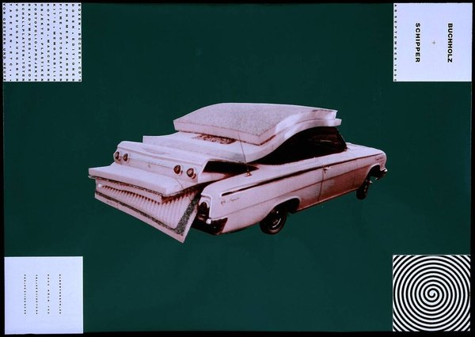
CRVI002107Martin Kippenberger - Buchholz & Schipper
1990
1990

CRVI002709Mitsuo Katsui - I'm here (AIR)
1993
1993

CRVI002501Milton Glaser - Dylan
1966
1966

CRVI002678Kazumasa Nagai - 京都市交響楽団演奏会 (Kyoto City Symphony Orchestra concert)

CRVI002935Ralph Schraivogel - poster

CRVI001052Takenobu Igarashi - Untitled poster
Poster · The Museum of Modern Art, New York
Poster · The Museum of Modern Art, New York

CRVI000157Kazumasa Nagai - Exhibition of Graphic Art
Designed by Kazumasa Nagai · 1978
Designed by Kazumasa Nagai · 1978

CRVI002515Unattributed - Josef Müller-Brockmann, construction analysis and timeline
2015
2015
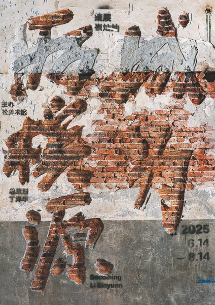
CRVI002960Jianping He - poster
2025
2025

CRVI001050Takenobu Igarashi - Takenobu Igarashi Exhibition 2
Poster · The Museum of Modern Art, New York
Poster · The Museum of Modern Art, New York
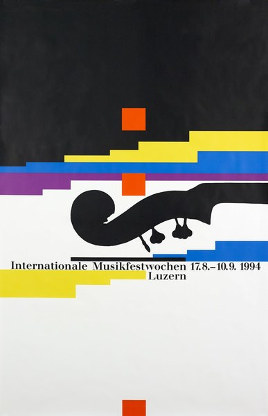
CRVI002810Rosmarie Tissi - Internationale Musikfestwochen Luzern
1994
1994

CRVI001446Unidentified - Secession 1897–1905
Poster
Poster

CRVI001343unattributed - Portrait poster with coloured discs
Maker unidentified
Maker unidentified

CRVI001822Bridget Riley - The Responsive Eye
1965
1965

CRVI000259Ryszard Kaja - Dachshund in Films
Poster
Poster

CRVI000134Shigeo Fukuda - Shigeo Fukuda
Exhibition, Keio Department Store SF Art Gallery, 23–28 May 1975 · 1975
Exhibition, Keio Department Store SF Art Gallery, 23–28 May 1975 · 1975

CRVI000163Kazumasa Nagai - World Design Expo '89 - Nagoya
Designed by Kazumasa Nagai · 1989
Designed by Kazumasa Nagai · 1989
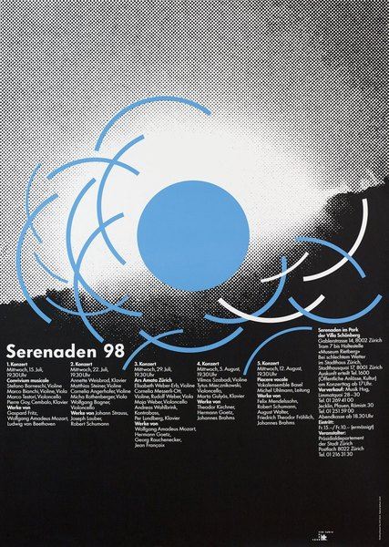
CRVI002803Rosmarie Tissi - Serenaden 98
1998
1998

CRVI001071David Rudnick - Poster for Pure Halloween — Dave P, Zillas on Acid, Greg D, Steve Vena
Poster · 2017
Poster · 2017

CRVI000774George Giusti - Prevent Forest Fires! Crush Out Your Cigarette
U.S. Forest Service · 1945
U.S. Forest Service · 1945

CRVI002512Josef Müller-Brockmann - Automobil-Club der Schweiz: schützt das Kind!
1953
1953

CRVI002509Dan Rawlinson - Josef Müller-Brockmann
2019
2019

CRVI000114Yusaku Kamekura - Tokyo 1964 — Butterfly Swimmer
Official poster, Games of the XVIII Olympiad · photograph Osamu Hayasaki · photo direction Jo Murakoshi · 1964
Official poster, Games of the XVIII Olympiad · photograph Osamu Hayasaki · photo direction Jo Murakoshi · 1964

CRVI000115Yusaku Kamekura - Tokyo 1964 — Starting Line
Official poster, Games of the XVIII Olympiad · photograph Osamu Hayasaki · 1964
Official poster, Games of the XVIII Olympiad · photograph Osamu Hayasaki · 1964

CRVI000162Kazumasa Nagai - The World of Kazumasa Nagai - Ikeda Museum of the 20th Century Art
Designed by Kazumasa Nagai · 1980
Designed by Kazumasa Nagai · 1980

CRVI000160Kazumasa Nagai - Kazumasa Nagai Exhibition - Design Gallery
Designed by Kazumasa Nagai · 1991
Designed by Kazumasa Nagai · 1991

CRVI000159Kazumasa Nagai - JIDA 30th Anniversary Program
Designed by Kazumasa Nagai · 1982
Designed by Kazumasa Nagai · 1982
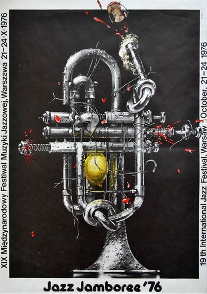
CRVI002789Waldemar Świerzy - Jazz Jamboree '76
1976
1976

CRVI001068David Rudnick - Poster for Making Time — Bicep, Avalon, Emerson, Dave P, Z.O.A., S. Vena, Sorted
Poster · Philadelphia · 2018
Poster · Philadelphia · 2018
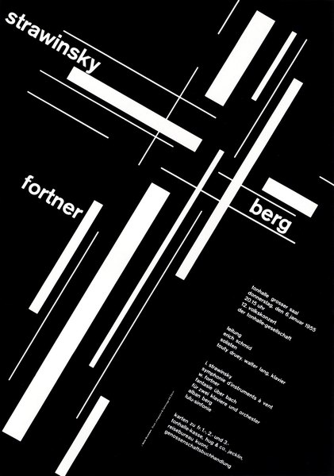
CRVI002518Josef Müller-Brockmann - Strawinsky / Fortner / Berg
1955
1955

CRVI000125Yusaku Kamekura - Expo '70
Japan World Exposition, Osaka · 'Progress and Harmony for Mankind' · 1970
Japan World Exposition, Osaka · 'Progress and Harmony for Mankind' · 1970
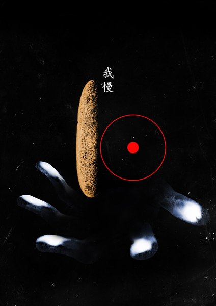
CRVI002497Delikio Parris - 我慢 (Gaman), from A Tribute to Koichi Sato